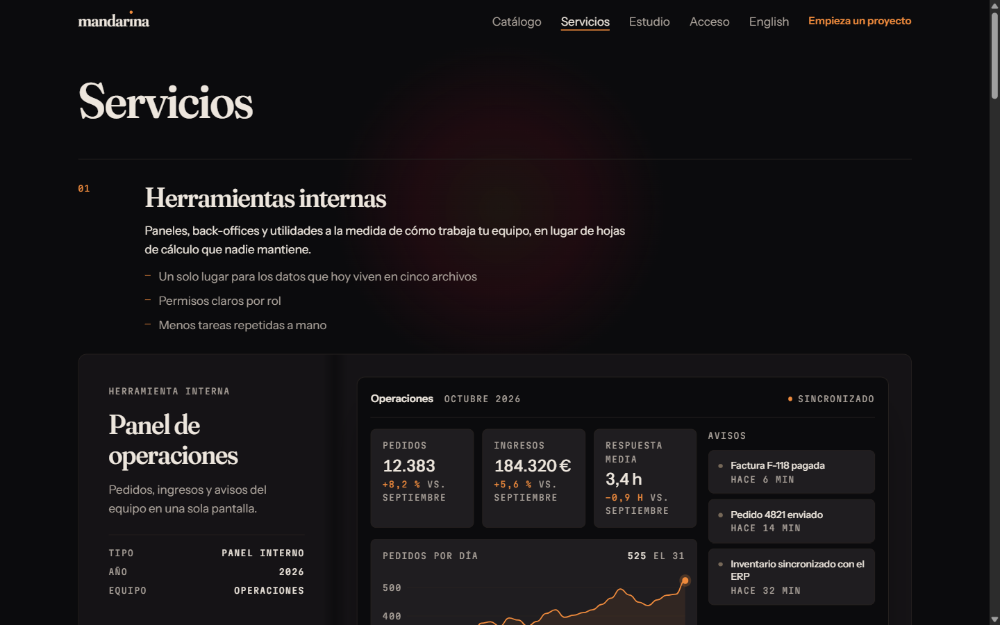
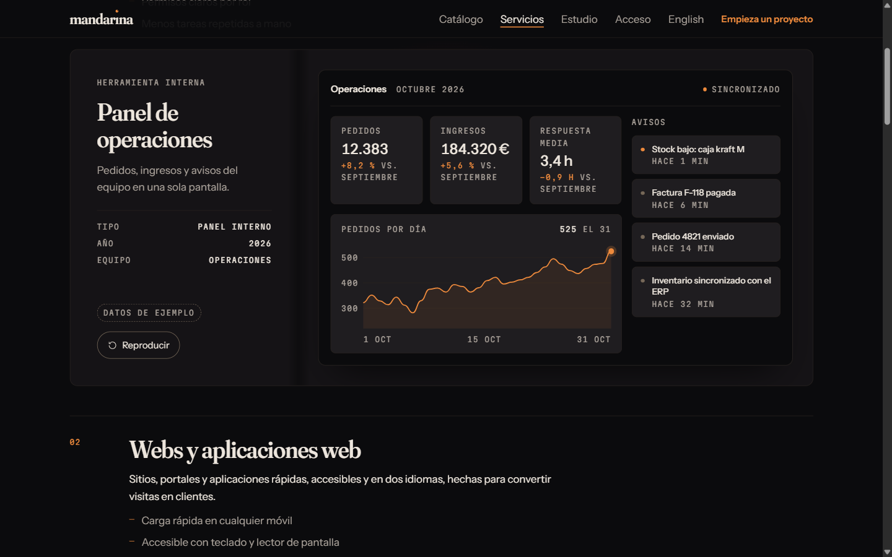
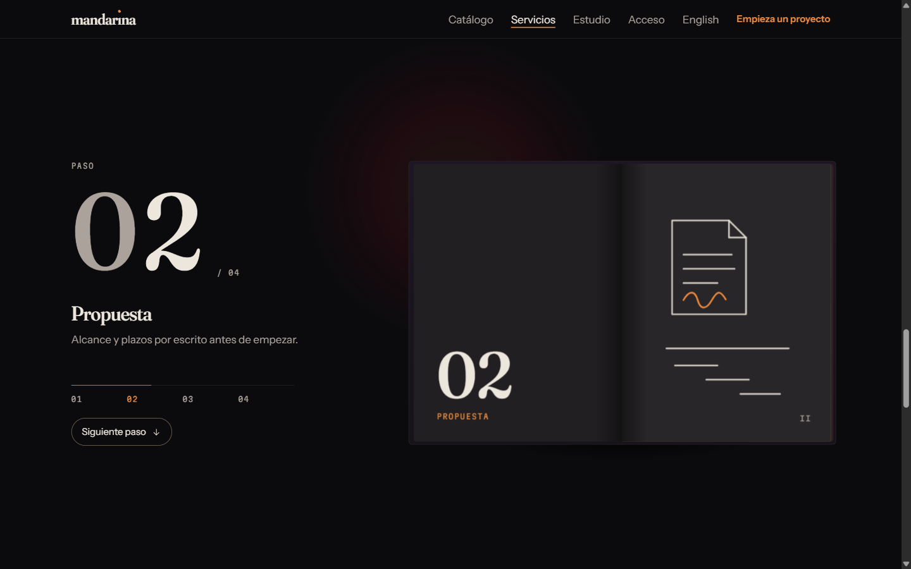
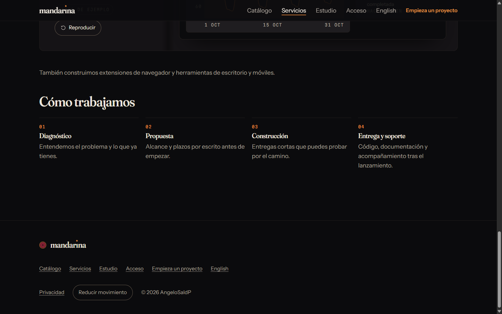

Servicios: vitrinas en vivo y pasos fijados
Página de Servicios del prototipo (tarea 6). Cada servicio muestra una interfaz en vivo con datos de ejemplo, y "Cómo trabajamos" es un contador de pasos que se queda fijo mientras el libro pasa sus hojas. Volver.
Escritorio, 1440 × 900







